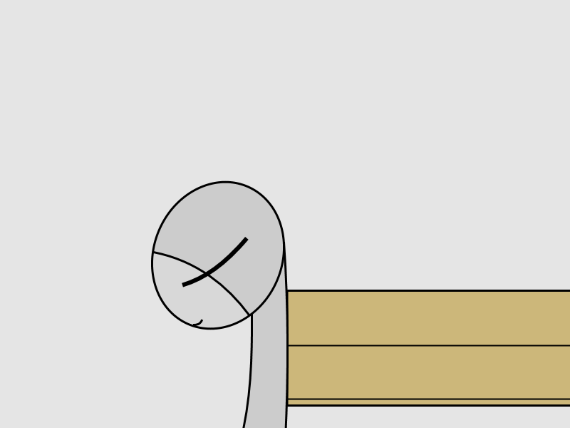
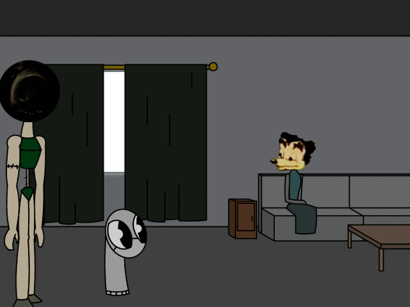

You're wondering when dinner's coming. Your Step-father didn't tell you when it'll be so you'll try to come up with something fun to do.
Maybe you should think about who you are or look around the room?
Gabriel said--
Check the toy box
Check the toy box

(Squeek!) You love that idea! After all your toys where your friends since your step-father locked you in your room!
Look here! These are your best friends!
The blue one with the blanket is called Lazlo. The color cube is called Hybrido. And the rabbid plush is a homeless hobo that you don't
know the name of.
They where with you for the last 3 years of isolation! A bound was expected to grow between you all!
gorbino said--
Look at the fourth wall
Look at the fourth wall
There's nothing there..
loomhigh said--
What does Hybrido do for a living? Seems like a bit of a square
What does Hybrido do for a living? Seems like a bit of a square
That's a really good question. You don't know what he does in the toy box but you know for sure that he's a master at existing. And he's
also a god of mind tricks.
Maybe you shouldn't interfere with his private life. He's the best of the 4 of you after all.
Wiwian said--
what can you tell us about Lazlo
what can you tell us about Lazlo
Lazlo was based of his creator who gave you him when you where depressed. You recal remembering him being called 'Iggy' but that's unclear
since you stayed home for 3 years without going out at all. (Let alone see the sun)
Lazlo has the same traits as his creator, friendly and talkative. At least that's how Lazlo was so you assume that's how the creator is as
well.
Wiwian said--
is the bunny doing alright? they don't look very...well
is the bunny doing alright? they don't look very...well
Lightecho said--
Is the hobo... living?
Is the hobo... living?
Don't worry about him. It's just his eyes that are dead. Perhaps his vocal cords as well since he's mute a lot. It's kinda hard not to feel
sorry for him. The smell he's giving might have killed his nasal passage as well.
glizzy lizzy said--
Put the rabbit hobo back, i dont like him.
Put the rabbit hobo back, i dont like him.
That's very rude to say. But brave. You can't even tell your step-dad to let you out yourself since you're a little sock.
Gorgonzola said--
Are there more toys in the cupboard?
Are there more toys in the cupboard?
No. There's no toys in there since it's not meant for it, there's actually nothing in it but dust and empty space. But you can still play
games with it like pretending to be dead in it. Always fun to do actually.
Dad's been taking some time with the cooking today. You wonder what's taking so long.
Katia said--
Nothing out of the ordinary has happened. You’re sure Dad is fine.
Nothing out of the ordinary has happened. You’re sure Dad is fine.
You're definitely sure of that. He's a very muscular bear so of course he's healthy and fine.
Maybe he's cooking Asothils for you? Those can take some time to do but he usually doesn't make that often.
john eldenring said--
play elden ring
play elden ring
But you don't have an old ring. Or what did the voice in your head mean by that? The Lord Of The Rings?
You might need to think about something else instead. Maybe your past crush? Something at least. You don't know.
Capes said--
what do you mean past crush, why would you crush something? were you angry?
what do you mean past crush, why would you crush something? were you angry?
No no, not that type of 'crush'. You where in love with another sock.
After everything you remembered, she's the one you think of the most. Her name's Ribbi Sock. She was an artist and is also the prettiest
girl you've ever seen in your life! You might not remember how she looked like mostly but you saw an angel walk on mortal ground for
sure!
But what about you? How can you have the chance to get Ribbi when you're you? It's been years as well so maybe she's gotten someone else
to care for her? 3 years in your room. Only allowed to get out when it's dinner time. Sometimes.
John Determination said--
You need a super good plan to find Ribbi Sock and confess your love.
You need a super good plan to find Ribbi Sock and confess your love.

You wished it worked like that a couple of times. But you're really not the one to disobey your step-dad and go outside on your own free
will. But thanks for being a determined voice.
Speaking of dad.. Your step-father is here..
"Hi dad!" You said. "Come with me Sockl." He said in his usual deep voice.
"Um.. Okay...?" You said. Dad doesn't say your real name that much at all. He mostly calls you 'Boy' or 'Runt'. Did you do something wrong
again?
Self preservation said--
OH MY GOD HE'S A PITBULL ABSCOND OUTTA THERE!
ABORT, ABORT!
OH MY GOD HE'S A PITBULL ABSCOND OUTTA THERE!
ABORT, ABORT!
No need to panic. He might look odd but you knew him ever since he married your mother so he's not dangerous.
Also he's some sort of Bear-thing-something. No need to worry, this is all normal.
Gorblno said--
He's probably mad because you failed to notice the door on the fourth wall!
He's probably mad because you failed to notice the door on the fourth wall!
That's actually a locked safe. Dad keeps his medicin there. Or whatever it is.
Anyway. There's nothing to worry about. Infact. He's your protector! He wouldn't hurt you or even let someone else do that either like if
he was to-

Take.. In a stranger to your home...
Your dad said "Sockl, this is Mary." and you greeted the strange couch woman "Hi Mary! I'm-"

"Don't talk to me you fag!" Mary said. "Don't talk to her Sockl." Dad said to you.
You where clueless about what to do now..